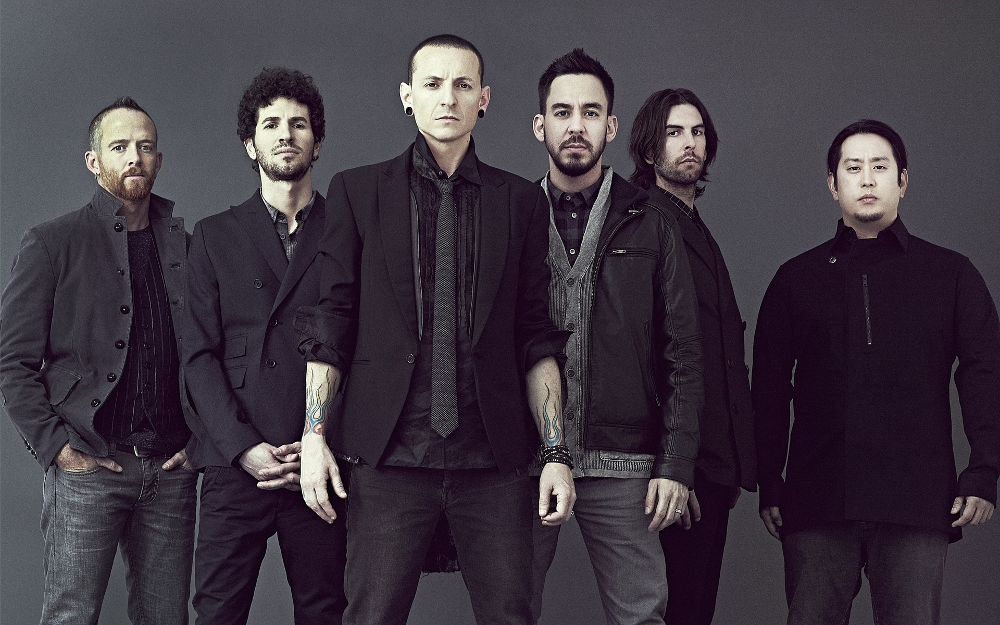

Conocí a la banda por primera vez cuando vi las peliculas de Transformers dirigidas por Michael Bay. Por un tiempo sólo conocia
sus canciones más famosas como Numb, In the end, What I ve Done, Faint, New Divide, entre otros, pero después de enterarme de la muerte
de su vocalista, Chester Bennington, comencé a escuchar su discografía completa, miré sus videomusicales y algunos recitales disponibles por Youtube, investigué sobre la historia de la banda,etc.
Con el tiempo me terminó gustando y me convertí en un fan más. No sé muy bien cuál es la razon por la que no puedo estar un dia sin escucharlos, pienso que pueden ser por varias cosas:
la nostalgia, las canciones brutales e intensas, la voz espectacular de Chester y Emily, los discos y sus portadas, los momentos dificiles en las que su música me acompañó, etc.
Ahora que me pongo a pensar, si no hubiese sido por Linkin Park no hubiera escuchado otras bandas de Nu Metal increibles como Slipknot, Korn y System of A Down, tampoco hubiera conocido el mundo del Heavy Metal y sus variantes.
Aunque no mantuvieron siempre su sonido pesado y crudo, eso se nota mucho en discos como A Thousand Suns, Living Things y One more Light, no me pareció malo ya que pienso que una banda tiene que evolucionar, experimentar y no estancarse.
Por eso, y por los videos de Youtube con música de Linkin Park de fondo que ví de pendejo, es que son mi banda favorita.

Formación original de Linkin Park con Chester Bennington (ex-vocalista) y Rob Bourdon (ex-baterista).

Nueva formación de Linkin Park con Emily Armstrong (vocalista) y Colin Brittain (baterista).